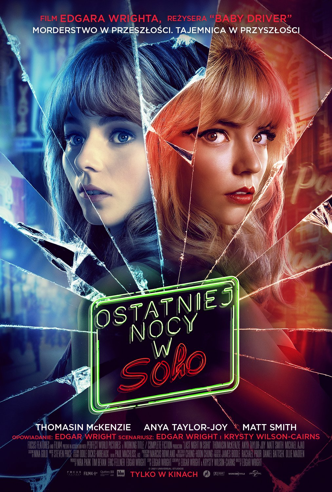
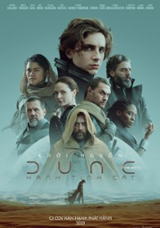
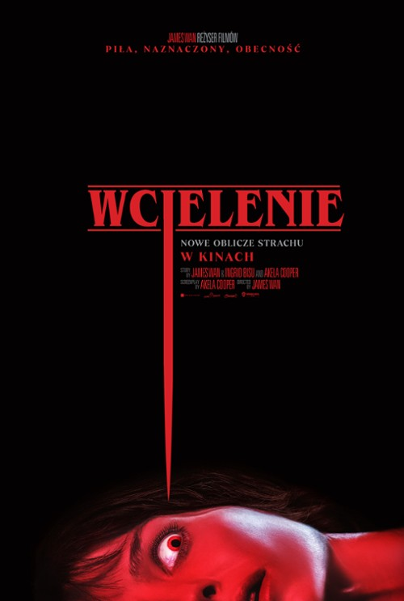
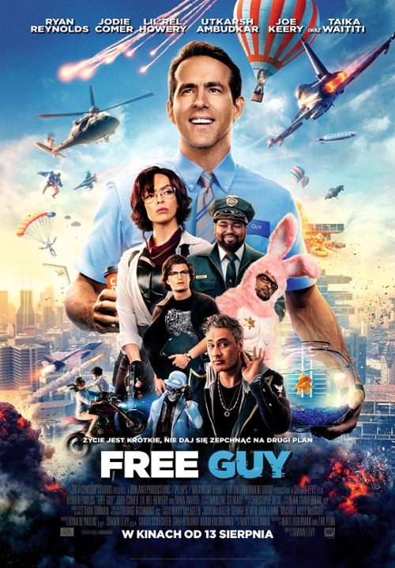
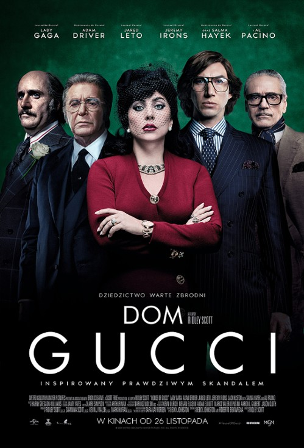

SPIDERMAN: NO WAY HOME
Amerykański fantastycznonaukowy film akcji na podstawie serii komiksów o superbohaterze o tym samym pseudonimie wydawnictwa Marvel Comics. Za reżyserię odpowiada Jon Watts, a za scenariusz Chris McKenna i Erik Sommers. Producentami filmu są Kevin Feige i Amy Pascal. W tytułowej roli powróci Tom Holland, a obok niego w głównych rolach wystąpią: Zendaya, Jacob Batalon, Marisa Tomei, Jon Favreau, J.B. Smoove, Martin Starr, Benedict Cumberbatch, Benedict Wong, Willem Dafoe, Jamie Foxx, Alfred Molina, Rhys Ifans i Thomas Haden Church.
Produkcja ta wchodzi w skład IV Fazy Marvel Cinematic Universe, jest on dwudziestym siódmym filmem należącym do tej franczyzy oraz kontynuacją filmów Spider-Man: Homecoming z 2017 i Spider-Man: Daleko od domu z 2019 roku. W przygotowaniu są również: druga trylogia z Hollandem w tytułowej roli i serial animowany dla Disney+, Spider-Man: Freshman Year.
NIE CZAS UMIERAĆ
Amerykańsko-brytyjski film szpiegowski, 25. część serii filmów o Jamesie Bondzie, wyprodukowana przez Eon Productions. Obraz jest piątym i ostatnim występem Daniela Craiga w roli agenta Jamesa Bonda. Film wyreżyserował Cary Joji Fukunaga, który jest również współautorem scenariusza. Film pojawił się w kinach w Wielkiej Brytanii 30 września 2021, dwa dni po jego oficjalnej premierze w Royal Albert Hall. Premiera miała początkowo się odbyć w kwietniu 2020, lecz była wielokrotnie przekładana w wyniku pandemii COVID-19. Poza odtwórcą roli głównej, swoje role z poprzednich filmów powtórzyli: Léa Seydoux, Ben Whishaw, Naomie Harris, Jeffrey Wright, Christoph Waltz, Rory Kinnear i Ralph Fiennes.
Kilka lat po odejściu Bonda ze służby, Felix Leiter z CIA zwraca się do niego z prośbą o pomoc. 007 musi powstrzymać Safina, dysponującego niebezpieczną nanotechnologią.

OSTATNIEJ NOCY W SOHO
Brytyjski horror psychologiczny z 2021 roku w reżyserii Edgara Wrighta. Film miał swoją światową premierę 4 września 2021 w ramach pokazów pozakonkursowych na 78. MFF w Wenecji. Role w filmie otrzymali między innymi: Thomasin McKenzie, Anya Taylor-Joy, Diana Rigg, Michael Ajao oraz Matt Smith.
Eloise Turner, młoda dziewczyna zafascynowana swingującymi latami sześćdziesiątymi, przeprowadza się do Londynu, by studiować projektowanie mody. Zamieszkuje w pokoju, wynajmowanym od pani Collins. Eloise wkrótce zaczyna doświadczać wizji Londynu w latach 60. XX wieku, których główną bohaterką jest początkująca piosenkarka, Sandie.

DIUNA
Amerykański film science fiction w reżyserii Denisa Villeneuve’a z 2021 roku, zrealizowany na podstawie powieści Franka Herberta o tym samym tytule, adaptujący jej pierwszą połowę. Druga część ekranizacji ma się pojawić w kinach w październiku 2023.
Akcja toczy się w kosmosie w dalekiej przyszłości, w której, zamiast na udoskonalanie urządzeń, postawiono na rozwój umysłu (Uniwersum Diuny). Najważniejszą planetą we wszechświecie stała się Arrakis (Diuna), na której znajdują się złoża melanżu (przyprawy), umożliwiającego jasnowidzenie potrzebne do uniknięcia niebezpieczeństw podróży międzygwiezdnych. Powstawanie melanżu związane jest z cyklem rozwojowym czerwi pustyni – olbrzymich istot, żyjących w piaskach Arrakis. Diuna zostaje przekazana w lenno rodowi Atrydów. Na planetę przybywają książę Leto I Atryda, jego konkubina lady Jessika, syn Paul oraz ich armia. Wkrótce czeka ich jednak konfrontacja z rodem Harkonnenów.

WCIELENIE
Film reżyserii mistrza Jamesa Wana, produkcja chińsko-amerykańsko-rumuńska. Premieria światowa nastąpiła 1 września 2021.
Film opowiada o Madison, która doświadcza wizji makabrycznych morderstw, podczas których jest sparaliżowana. Niestety najgorsze rozpoczyna się gdy kobieta odkrywa, że jej wizje to rzeczywistość

FREE GUY
Fantastycznonaukowa komedia akcji z 2021 roku w reżyserii Shawna Levy'ego. Jej scenariusz, napisali Matt Lieberman i Zak Penn.
Urzędnik bankowy niespodziewanie uświadamia sobie, że jest pomniejszą postacią NPC w grze komputerowej i zaczyna kreować własną fabułę. Okazuje się, że swe przebudzenie zawdzięcza programistom Millie i Keysowi. Grozi mu jednak niebezpieczeństwo, gdyż gra ma zostać wyłączona.

DOM GUCCI
Amerykański kryminał biograficzny w reżyserii Ridleya Scotta. Stworzony na podstawie książki Sary Gay Forden - The House of Gucci: A Sensational Story of Murder, Madness, Glamour, and Greed z 2001 roku. Główną rolę zagrała Lady Gaga jako Patrizia Reggiani, która zleciła morderstwo swojego byłego męża, głowę domu mody Gucci, Maurizio Gucciego – w roli Adam Driver.
Akcja rozgrywa się w latach 1978 do 1997 roku. Przedstawia historię Patrizii Reggiani z Maurizo Gucci, włoskiego biznesmena oraz dziedzica domu mody Gucci. Ich związku, ślubu i przyczyn, które doprowadziły do ich rozstania oraz konfliktu jaki Patrizia wywołała wewnątrz rodziny Gucci. W końcu, okoliczności oraz następstw morderstwa Maurizio przez jego byłą żonę.
CLIFFORD. WIELKI CZERWONY PIES
Przygodowy film amerykańskiej produkcji w reżyserii Walta Beckera. W rolach głównych Rachael Ma oraz Jackson Frazer.
Miłość młodej dziewczyny do małego szczeniaczka o imieniu Clifford sprawia, że pies rośnie do ogromnych rozmiarów.